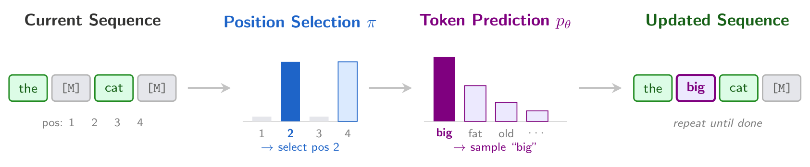
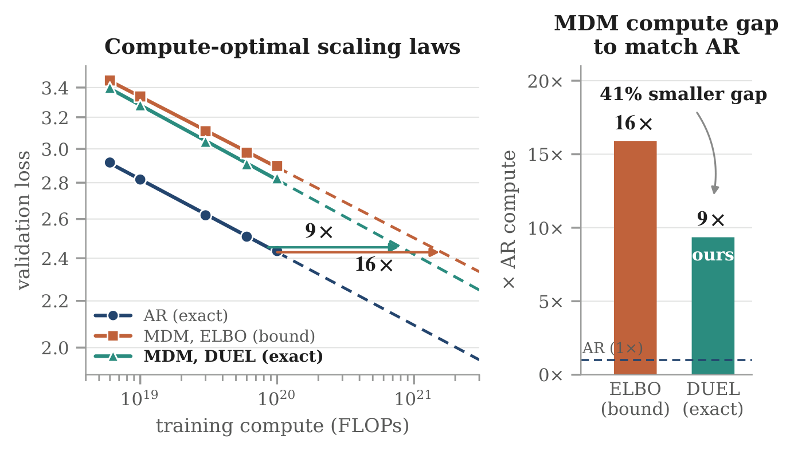

Masked diffusion models (MDMs) are trained to predict tokens in every order but generate in one. As such, MDM likelihood is an intractable sum over all orders. The evidence lower bound (ELBO) is used as a proxy for likelihood, but it is a loose bound and assumes positions are unmasked uniformly at random. Frontier MDMs, however, select positions with deterministic rules such as confidence. To resolve this mismatch we introduce Duel, a framework that unifies common deterministic MDM samplers. Duel allows for likelihood computation that is both exact and under the sampler that is actually used during generation. Duel is a simple plug-and-play algorithm applicable to any pretrained MDM with no retraining. To compute the likelihood of a text sequence, simply replay generation, reveal the true tokens instead of sampled ones, and sum their log-probabilities. Evaluating with Duel instead of the ELBO changes what we conclude about MDMs. The perplexity gap between MDMs and autoregressive (AR) models shrinks by up to 32% in-domain and 82% zero-shot. In scaling laws, the reported 16× MDM–AR compute gap falls to 9× under Duel, revealing more than ⅓ is an evaluation artifact. Scoring multiple-choice answers with likelihood via Duel instead of the ELBO improves LLaDA-8B accuracy on all six tasks, by up to 9.7 points. Duel also selects samplers correctly: it matches a gold-standard LLM judge on every decided comparison, which generative perplexity and MAUVE fail to do. Duel reveals that MDMs are ultimately more competitive with AR models than the ELBO initially suggests.
01Background
1.1Masked diffusion models
For a sequence $\bx = (x^1, \dots, x^L)$, $\rev{S}$ denotes its tokens at positions $S$, with the rest masked. The forward process masks each token independently with probability $1-\alpha_t$, for noise schedule $\alpha_t$. A denoiser reverses it, predicting $p_\theta(x^\ell \mid \rev{S})$ at every masked position. The likelihood $p_\theta(\bx) = \sum_{\bz_{0:1}} p_\theta(\bx, \bz_{0:1})$ sums over all latent trajectories and is intractable, so MDMs are trained with the evidence lower bound (ELBO):
1.2Masked diffusion as any-order autoregression
An alternative view treats MDMs as any-order autoregressive models (AO-ARMs), a class that originates in order-agnostic NADE (Uria et al., 2014) and is equivalent to MDMs (Hoogeboom et al., 2021; Ou et al., 2024; Kim et al., 2025a). This view makes the unmasking order explicit.
Generation reveals tokens in some order, an ordered partition $\sigma = (\sigma_1, \dots, \sigma_T)$ of $[L]$. At each step a policy $\pol$ selects positions and the denoiser $p_\theta$ predicts their tokens.

The probability of generating $\bx$ along $\sigma$ factorizes into these two steps:
Summing over orders gives the likelihood $\ppol{\pol}(\bx) = \sum_\sigma p_\theta(\bx, \sigma)$, so each policy defines a different distribution from the same denoiser. The diffusion ELBO corresponds to the uniform policy $\punif$ and follows from Jensen's inequality:
1.3Problems with the ELBO
Equation (3) has two problems.
- It is only a bound. Jensen's inequality leaves a gap of unknown size, so the ELBO overstates an MDM's perplexity.
- It scores the wrong sampler. It assumes positions are unmasked uniformly at random. However, no open frontier MDM samples this way. LLaDA (Nie et al., 2025), Dream (Ye et al., 2025), LLaDA 2.0 (Bie et al., 2025), SDAR (Cheng et al., 2025) and Nemotron-Diffusion (Fu et al., 2026) all choose positions with deterministic rules such as confidence, because random orders are reported to produce worse samples.
The ELBO therefore evaluates a model nobody deploys, and it cannot tell samplers apart. Together they make MDMs look worse than they are.
02Duel: exact likelihood under deterministic unmasking
Duel fixes both problems with the ELBO by computing the exact likelihood under the sampler that is actually used. To formalize this, note that frontier MDMs choose positions with a deterministic unmasking rule $F$, which looks at the denoiser's predictions and returns the positions to reveal next. Examples include left-to-right, greedy confidence, probability margin, confidence threshold and KLASS.
Show rule definitions
| Rule | Positions revealed, $F(\rev{S})$ | Source |
|---|---|---|
| Left-to-right | the $k$ leftmost $\ell \in \mathcal M$ | AR decoding |
| Greedy confidence | $\mathrm{top}_k\, P^{(1)}_\ell$ | LLaDA, Dream |
| Probability margin | $\mathrm{top}_k\, \big(P^{(1)}_\ell - P^{(2)}_\ell\big)$ | Kim et al., 2025a |
| Confidence threshold | $\{\ell \in \mathcal M : P^{(1)}_\ell \ge \mu\}$ | Fast-dLLM |
| KLASS | threshold + $\KL(\hat P_\ell \| P_\ell) {\le} \nu$ | Kim et al., 2025b |
Under a rule, the policy puts all of its mass on a single choice:
Running $F$ on $\bx$ therefore gives a single order $\sigF(\bx)$, and the likelihood can be computed exactly:
Plug (4) into the sum over orders $\ppol{\pol}(\bx) = \sum_\sigma p_\theta(\bx, \sigma)$. The indicator is zero for every order except $\sigF(\bx)$, so a sum of more than $L!$ terms reduces to a single term:
- Intuition: a deterministic sampler can produce a given text along only one path, so its likelihood is the chain rule along that path.
- How: replay generation, but reveal the true tokens instead of sampling them, and add up their log-probabilities.
- Properties: exact, with no Jensen gap, and computed under the sampler actually used.
- Cost: the same as generation, $\lceil L/k \rceil$ forward passes, with no retraining.
Show algorithms: sampling vs. exact likelihood
- Require denoiser $p_\theta$, rule $F$
- $S \gets \emptyset$nothing revealed
- while masked tokens remain do
- $P \gets p_\theta(\cdot \mid \rev{S})$one forward pass
- $I \gets F(\rev{S})$positions to reveal
- for $\ell \in I$ do
- $x^\ell \sim \Cat(P_\ell)$sample a token
- $S \gets S \cup I$
- return $\bx$a sample from $\ppol{\pF}$
- Require sequence $\bx$, denoiser $p_\theta$, rule $F$
- $S \gets \emptyset,\ \mathit{ll} \gets 0$nothing revealed
- while masked tokens remain do
- $P \gets p_\theta(\cdot \mid \rev{S})$one forward pass
- $I \gets F(\rev{S})$same rule, same order
- for $\ell \in I$ do
- $\mathit{ll} \mathrel{+}= \log P_\ell[x^\ell]$score the truth
- $S \gets S \cup I$
- return $\mathit{ll}$$\log \ppol{\pF}(\bx)$, exact
03Results
Throughout, ELBO values are bounds under the uniform policy (marked $\le$) and Duel values are exact under the sampler's own policy $\pF$. The models are the same in both cases; only the evaluation changes.
3.1Perplexity — DUEL closes up to 32% of the MDM–AR gap in-domain, 82% zero-shot
We compare SEDD (Lou et al., 2024), MDLM (Sahoo et al., 2024) and BD3-LM (Arriola et al., 2025) with an AR baseline of similar size trained on comparable data. Gap closed is the fraction of the ELBO's MDM–AR perplexity gap that disappears under Duel.
| Model | ELBO ↓ | Duel ↓ | Gap closed ↑ |
|---|---|---|---|
| SEDD | ≤24.10 | 22.58 | 23.2% |
| MDLM | ≤22.98 | 21.86 | 20.6% |
| BD3-LM $L'{=}4$ | ≤20.73 | 19.73 | 31.3% |
| BD3-LM $L'{=}8$ | ≤21.68 | 20.37 | 31.6% |
| BD3-LM $L'{=}16$ | ≤22.27 | 20.76 | 31.9% |
| Dataset | SEDD | MDLM | BD3-LM |
|---|---|---|---|
| PTB | 31.3 | 34.3 | 81.8 |
| Wikitext | 40.8 | 28.5 | 31.4 |
| LM1B | 22.1 | 29.0 | 29.8 |
| AG News | 25.7 | 27.8 | 51.7 |
| Average | 30.0 | 29.9 | 48.7 |
At 8B scale, Duel lowers LLaDA-8B’s zero-shot perplexity by 5–8%.
More perplexity results: LM1B and 8B models
| Model | ELBO ↓ | Duel ↓ | Gap closed ↑ |
|---|---|---|---|
| SEDD | ≤32.68 | 31.51 | 11.9% |
| MDLM | ≤31.78 | 29.03 | 30.7% |
| BD3-LM $L'{=}4$ | ≤28.23 | 26.97 | 23.3% |
| BD3-LM $L'{=}8$ | ≤29.83 | 27.85 | 28.3% |
| BD3-LM $L'{=}16$ | ≤30.60 | 28.39 | 28.4% |
| Model | Estimator | Wikitext | Lambada | AG News |
|---|---|---|---|---|
| Llama3-8B | exact | 7.94 | 32.40 | 41.29 |
| LLaDA-8B | ELBO | ≤15.29 | ≤39.04 | ≤85.17 |
| LLaDA-8B | Duel | 14.50 | 36.00 | 78.91 |
3.2Scaling laws — the MDM–AR compute gap falls from 16× to 9×
Using the ELBO, Nie et al. (2024) found that MDMs need about 16× more compute than AR models to reach the same loss. We rescore the same checkpoints with Duel and change nothing else. The gap falls to 9–10× at every compute budget, a 31–41% reduction that grows with scale. The ELBO is only about 0.07 nats loose, which looks negligible on a loss curve but makes an enormous difference to the compute gap. Scaling laws need exact likelihoods.

3.3Multiple choice — DUEL improves LLaDA-8B on all six tasks
Multiple-choice benchmarks select the answer with the highest likelihood, so the likelihood estimate directly affects accuracy. We score LLaDA-8B-Base's answers with the ELBO or with Duel, using greedy or left-to-right unmasking.
| ELBO | Duel | ||
|---|---|---|---|
| Task | uniform | greedy | left-to-right |
| MuTual | 50.1 | 51.6+1.5 | 51.7+1.6 |
| LogiQA | 34.1 | 39.0+4.9 | 41.6+7.5 |
| LSAT-RC | 55.4 | 60.2+4.8 | 65.1+9.7 |
| PIQA | 74.8 | 76.1+1.3 | 76.7+1.9 |
| LSAT-LR | 41.0 | 42.5+1.5 | 45.0+4.0 |
| HellaSwag | 70.7 | 71.4+0.7 | 71.1+0.4 |
| Average | 54.3 | 56.8+2.5 | 58.5+4.2 |
Duel improves accuracy on every task: by 2.5 points on average with greedy unmasking, 4.2 with left-to-right, and up to 9.7 on LSAT-RC.
3.4Sampler selection — DUEL agrees with an LLM judge on every decided comparison
The ELBO does not depend on the sampler, so it cannot compare samplers, but Duel can. For BD3-LM (110M) and LLaDA-8B, we rank three samplers at matched compute budgets with Duel, generative perplexity (gen-ppl) and MAUVE (Pillutla et al., 2021), and check each ranking against a blinded LLM judge.
| Scale | Duel | gen-ppl | MAUVE |
|---|---|---|---|
| 110M (BD3-LM) | 7/7 (10/12) | 1/7 (4/12) | 5/7 (8/12) |
| 8B (LLaDA) | 7/7 (11/12) | 7/7 (11/12) | 7/7 (8/12) |
| Total | 14/14 | 8/14 | 12/14 |
Why gen-ppl fails. Both metrics are cross-entropies, but their entropy terms differ (data, sampler, external scorer):
The entropy in gen-ppl, $H\big(\textcolor{#BC6440}{\ppol{\pF}}\big)$, is the sampler's own, so a sampler that produces repetitive, low-entropy text scores well. The entropy in Duel, $H\big(\textcolor{#2F7A6E}{p_{\mathrm{data}}}\big)$, is the data's, which is the same for every sampler. At 110M, gen-ppl ranks the most repetitive sampler best, while the judge ranks it worst.
04Limitations
Duel requires a deterministic rule for choosing positions; stochastic or remasking samplers bring back the sum over orders. Its cost also grows with sequence length, which makes it better suited to final evaluation than to monitoring during training.
Citation
@article{turok2026duel,
title = {{DUEL}: Exact Likelihood Reshapes Masked Diffusion Scaling Laws and Beyond},
author = {Turok, Gilad and Schiff, Yair and De Sa, Chris and Kuleshov, Volodymyr},
journal = {arXiv preprint arXiv:2603.01367},
year = {2026}
}